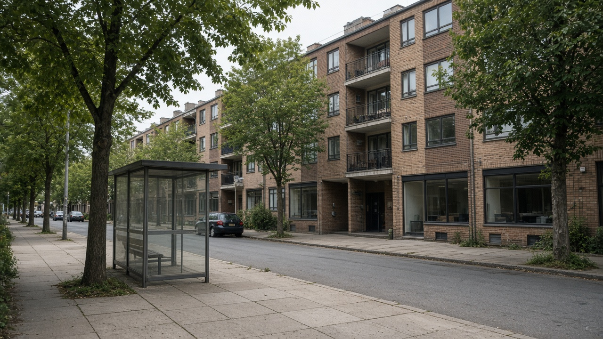
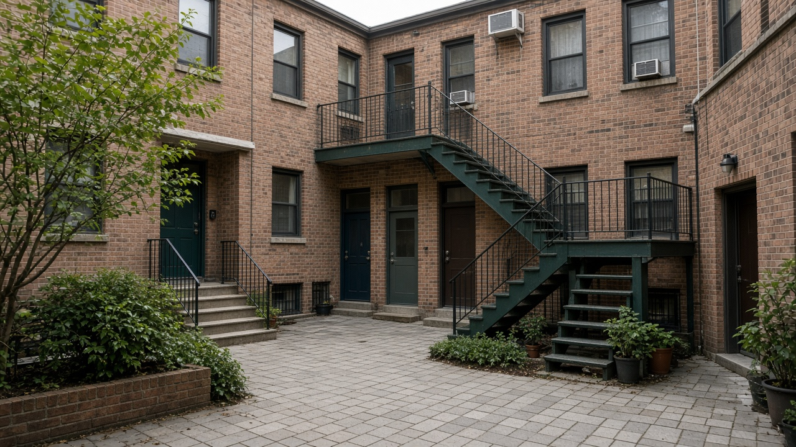
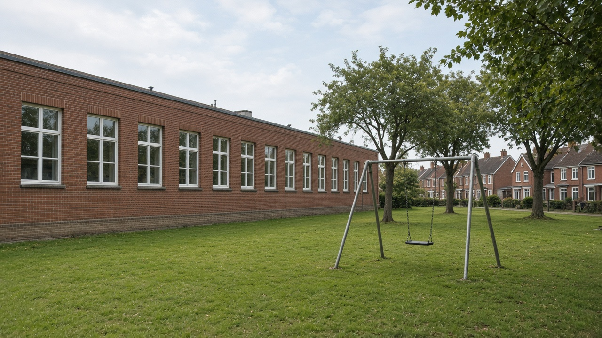

Affordable Housing and Inclusive Neighborhoods
Published on August 20, 2026

Affordable housing is not only a cheap building; it is a home near work, schools, clinics, and transport that a household can pay for without sacrificing food or health. Inclusive neighbourhoods mix incomes, tenures, and household types so teachers, nurses, shop workers, and young families are not pushed to distant peri-urban belts. Location efficiency often matters more than unit size: a smaller flat on a bus corridor can cost less overall than a larger house that requires two motorcycles. Public land, inclusionary rules on private projects, and well-regulated rental markets are the usual tools. Without them, wage growth lags land prices and cities silently export their workforce to the edge.
Design and finance must work together. Compact walk-ups with shared courtyards, daylight, and earthquake-resistant details can be cheaper and healthier than isolated high-rises with costly lifts and parking podiums. Cooperative housing, rental guarantees, and targeted subsidies for the lowest incomes should sit beside credit for the middle of the market. Displacement is the risk when new investment arrives: sitting tenants need notice, relocation options nearby, and a share of new units. Gender and disability access—ground-floor units, safe lighting, tenure in women’s names—turn housing from a commodity into a social right. Informal rental rooms in Kathmandu Valley already house much of the urban poor; ignoring them leaves policy talking only to owners.
Municipalities can zone for mixed housing, cap parking that inflates costs, and partner with community groups to build on leftover public plots. Emerging towns in the hills and Terai still have a chance to reserve land for social housing before speculation closes the window. National housing banks and local property records must talk to planning departments so finance follows compact, serviced locations rather than leapfrog plots. Success is measured in rent-to-income ratios, commute times of essential workers, and whether children can stay in the same school when a family moves—not in the number of luxury towers completed.

किफायती आवास सस्तो भवन मात्र होइन; काम, विद्यालय, क्लिनिक र यातायात नजिकको घर हो जुन परिवारले खाना वा स्वास्थ्य नकाटी तिर्न सक्छ। समावेशी छिमेकले आय, स्वामित्व र घरपरिवार प्रकार मिसाउँछ ताकि शिक्षक, नर्स, पसल कामदार र युवा परिवार टाढाका उपनगरीय पेटीमा नधकेलिऊन्। स्थान दक्षता प्रायः एकाइ आकारभन्दा महत्त्वपूर्ण हुन्छ: बस करिडोरको सानो फ्ल्याट दुई मोटरसाइकल चाहिने ठूलो घरभन्दा समग्रमा सस्तो पर्न सक्छ। सार्वजनिक जग्गा, निजी आयोजनामा समावेशी नियम र राम्रो नियमन भएको भाडा बजार सामान्य औजार हुन्। बिना यिनका ज्याला वृद्धि भूमि मूल्य पछि पर्छ र शहरले मौन आफ्नो श्रमशक्ति किनारामा पठाउँछ।
डिजाइन र वित्त सँगै काम गर्नुपर्छ। साझा आँगन, दिनको प्रकाश र भूकम्प-प्रतिरोधी विवरण भएका सघन हिँडाइ भवन महँगो लिफ्ट र उठाएको पार्किङ तला भएका एक्ला अग्लो भवनभन्दा सस्ता र स्वस्थ हुन सक्छन्। सहकारी आवास, भाडा जमानत र सबैभन्दा न्यून आयका लागि लक्षित अनुदान बजारको मध्य तहका ऋण छेउ रहनुपर्छ। नयाँ लगानी आउँदा विस्थापन जोखिम हो: बस्दै गरेका भाडावाललाई सूचना, नजिक स्थानान्तरण विकल्प र नयाँ एकाइको हिस्सा चाहिन्छ। लैङ्गिक र अपाङ्गता पहुँच—तल्लो तलाका एकाइ, सुरक्षित बत्ती, महिला नाममा स्वामित्व—आवासलाई वस्तुबाट सामाजिक अधिकार बनाउँछ। काठमाडौं उपत्यकाका अनौपचारिक भाडा कोठाले सहरी गरिबको ठूलो हिस्सा राख्छन्; तिनीहरू बेवास्ता गर्दा नीति मालिकसँग मात्र बोल्छ।
नगरपालिकाले मिश्रित आवास क्षेत्र तोक्न, लागत फुलाउने पार्किङ सीमित गर्न र बाँकी सार्वजनिक प्लटमा सामुदायिक समूहसँग साझेदारी गर्न सक्छन्। पहाड र तराईका उदाउँदो सहरले सट्टेबाजीले झ्याल बन्द गर्नुअघि सामाजिक आवासका लागि जग्गा आरक्षित गर्ने मौका अझै छ। राष्ट्रिय आवास बैंक र स्थानीय सम्पत्ति अभिलेखले योजना विभागसँग कुरा गर्नुपर्छ ताकि वित्त सघन सेवायुक्त स्थान पछ्याओस्, उफ्रिने प्लट होइन। सफलता भाडा-आय अनुपात, आवश्यक कामदारको आवतजावत समय र परिवार सर्दा बच्चा एउटै विद्यालयमा रहन सक्छ कि भन्नेमा मापिन्छ—सम्पन्न टावर संख्यामा होइन।

किफ़ायती आवास सस्ती इमारत मात्र नहीं; काम, विद्यालय, क्लिनिक और परिवहन के पास वह घर है जिसे परिवार भोजन या स्वास्थ्य काटे बिना चुका सके। समावेशी मोहल्ले आय, स्वामित्व और परिवार प्रकार मिलाते हैं ताकि शिक्षक, नर्स, दुकान कामगार और युवा परिवार दूर के उपनगरीय पेटी में न धकेले जाएँ। स्थान दक्षता प्रायः इकाई आकार से अधिक मायने रखती है: बस गलियारे का छोटा फ़्लैट दो मोटरसाइकिल वाले बड़े घर से कुल मिलाकर सस्ता पड़ सकता है। सार्वजनिक ज़मीन, निजी परियोजनाओं पर समावेशी नियम और अच्छी तरह विनियमित किराया बाज़ार सामान्य औज़ार हैं। इनके बिना मज़दूरी वृद्धि भूमि मूल्य से पीछे रह जाती है और शहर चुपचाप अपनी श्रमशक्ति किनारे भेजता है।
डिज़ाइन और वित्त साथ काम करें। साझा आँगन, दिन का प्रकाश और भूकंप-प्रतिरोधी विवरण वाले सघन पैदल भवन महँगे लिफ़्ट और उठाई पार्किंग मंज़िल वाले अकेले ऊँचे भवनों से सस्ते और स्वस्थ हो सकते हैं। सहकारी आवास, किराया गारंटी और सबसे न्यून आय के लिए लक्षित अनुदान बाज़ार के मध्य स्तर के ऋण के साथ रहने चाहिए। नया निवेश आने पर विस्थापन जोखिम है: बैठे किरायेदारों को सूचना, पास स्थानांतरण विकल्प और नई इकाइयों का हिस्सा चाहिए। लैंगिक और विकलांगता पहुँच—निचली मंज़िल की इकाइयाँ, सुरक्षित रोशनी, महिला नाम पर स्वामित्व—आवास को वस्तु से सामाजिक अधिकार बनाती है। काठमांडू घाटी के अनौपचारिक किराया कमरे शहरी गरीब का बड़ा हिस्सा रखते हैं; उन्हें नज़रअंदाज़ करने पर नीति केवल मालिकों से बात करती है।
नगरपालिकाएँ मिश्रित आवास क्षेत्र तय कर सकती हैं, लागत फुलाने वाली पार्किंग सीमित कर सकती हैं और बचे सार्वजनिक प्लॉट पर सामुदायिक समूहों से साझेदारी कर सकती हैं। पहाड़ और तराई के उभरते नगर सट्टेबाजी खिड़की बंद करने से पहले सामाजिक आवास के लिए ज़मीन आरक्षित करने का मौका अभी रखते हैं। राष्ट्रीय आवास बैंक और स्थानीय संपत्ति अभिलेख को योजना विभाग से बात करनी चाहिए ताकि वित्त सघन सेवित स्थानों का पीछा करे, उछलते प्लॉट का नहीं। सफलता किराया-आय अनुपात, आवश्यक कामगारों के आवागमन समय और इस बात में मापी जाती है कि परिवार के सरकने पर बच्चा उसी विद्यालय में रह सकता है—संपन्न टावरों की संख्या में नहीं।